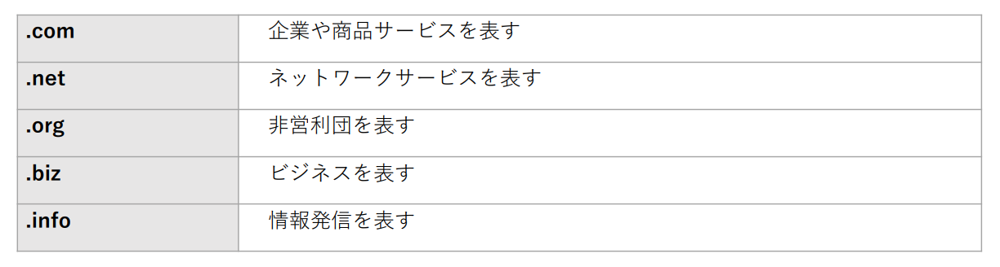

Webサイトとは
前のチュートリアルのページでは、とりあえずローカルの環境内でブラウザにhtmlファイルを表示させ、Webプログラミングの第一歩を踏み出しました。しかしまだなぜそのように出来たか分からないと思います。そこでこのページではその疑問を解消すべくWebサイトとはどのようなものなのか明らかにしていきたいと思います。
Webサイトについて
Webサイトとは、複数のWebページをひとつの複合体として構成したものです。一般的に日本では、ホームページと呼ばれているものがWebサイトにあたるが、英語圏では「homepage」と「website」が明確に区別されており、「homepage」はあくまでも最初に表示されるページのことを指し、サイト全体を指すのは「website」とされています。
Webサイトの開設に必要なもの
- ドメイン : インターネット上の住所
- サーバー : インターネット上の家
- Webサイト(中身) : 建物・部屋の中にあるコンテンツ・サービス（文章や画像などで構成されるファイル類）
Webサイトを作成するにあたって、必ず用意しなければならないのがドメインとサーバーになります。
ドメイン
ドメインとは、インターネットにおける「住所」のようなもので、主な役割は、WebサイトのURLとオリジナルのメールアドレスの2つになります。
【ドメインの前半部分】
URLの場合
Webサイトを公開する際に、URL（住所）が必要となり、この住所を設定するために、ドメインが必要となります。
メールアドレスの場合
@マーク前は、自由な文字列を設定することができ、1つのドメインで複数のメールアドレスを設定することが可能となっています。
ドメインの前半部分は好きな文字列を付けることができます。また、最近では「日本語ドメイン」と呼ばれる、全角ひらがな・カタカナ・漢字などを使用することも可能となっています。
【ドメインの後半部分】
任意の文字列を自由に決めることができる前半部分とは違い、ドメインの後半部分は「.com」や「.jp」などのように決まった文字列の種類から選びます。
ドメインの種類
ドメインの種類は、住んでいる国や地域に関係なく取得できるドメインと国や地域ごとに割り当てられ、基本的にその国や地域に在住する個人のみが取得できるドメインの2種類があります。
分野別トップレベルドメイン（gTLD)
分野別トップレベルドメイン（gTLD）は住んでいる場所（国・地域）に関係なく取得できるドメインです。種類によって、サービスや団体などを表しますが、必ずしもその種類を選択しなければならないという決まりはありません。
国コードトップレベルドメイン（ccTLD）
国コードトップレベルドメインは、国や地域ごとに割り当てられており、原則的にその国・地域に存在する個人（組織）でないと取得する事が出来ません。アメリカであれば「.us」日本であれば「.jp」が該当します。
【汎用JPドメイン名】
この「.jp」」ドメインのことを汎用JPドメイン名と呼び、日本国内に住所を持つ個人・組織であれば、誰でも、いくつでも登録することが可能です。
【属性型JPドメイン名】
「.jp」ドメインの中には、「.jp」の前に決められた文字列がいる属性型JPドメインと呼ばれるものがあります。( 例:「.co.jp」、「.ne.jp」など)
属性型JPドメイン名は、文字列により取得できる組織が限定されているのが特徴です。また、ネットワークサービス用のドメインである「.ne.jp」を除き、1組織に1つしか取得する事が出来ません。
サーバー
ドメインが住所のようなものに対して、サーバーはWebサイトを保管しておく家のようなものになります。そして、取得したドメイン（住所）をサーバー（家）に紐づけることによって、その URL（ドメイン）にアクセスしたユーザーはサーバーにある、Webサイトを見ることができます。
サーバーの種類
サーバーには、共用サーバーと専用サーバーの2種類があります。
共有サーバーは、マンションの一室を利用するイメージとなっています。複数のユーザーでサーバーを利用するため、同じサーバー内の別のサイトにアクセスが集中すると、他のサイトの表示が重くなってしまう可能性があるため、共有サーバーにはある程度の制限が設けられています。さらに、スペックや機能なども、自由にカスタマイズすることが出来ず、サーバー会社やサーバー会社のプランの中から必要な上演にあったものを選択する必要があります。
一方で専用サーバーは、1つのサーバーを1人のユーザーで独占して利用することが可能となっています。また、1つのサーバーを1人で使えるため、他サイトに影響を受けることなく、自由にカスタマイズすることが可能となっているが、その分費用面も共有サーバーに比べて高くなっています。
共有サーバーには制限があるが、様々なサーバープランがあるので、必要に応じて共用サーバーと専用サーバーを使い分けることが大切です。たとえば、一般的な小規模から中規模のサイトであれば、共用サーバーを利用し、大規模なサイトや大きくアクセスを見込んだWebサービスを展開する場合は専用サーバーを検討する必要があります。
Webページの仕組み
Webページは「HTML」「CSS」「JavaScript」といった3つのコンピュータ言語で構築されています。この3つの言語は、それぞれ役割が全く異なります。Webサイトの制作を始める前に、まずはどの言語がどんな役割を果たすか見ていきましょう。
HTML
HTMLとは「Hyper Text Markup Language」の略称で、マークアップランゲージ、つまり、マークアップ言語とは、文章を構造化するための言語のことを言います。HTMLはタグで構成されており、指定したい箇所をタグで囲むことによって文字に様々な表現を加えられます。たとえば、HTMLで見出しを設定したり、写真や動画なども入れたりできます。他にもさまざまなデザインやアレンジを加えられるため、作りたいWebサイトのイメージに合わせてHTMLタグを組み合わせてください。また、HTMLには「.html」という専用の拡張子があり、パソコンで「.html」と表示されない場合、拡張子の設定をする必要があるため注意してください。
CSS
CSSとは「Cascading Style Sheets」の略称で、文章のスタイルを指定する技術をスタイルシートと言い、HTMLなどで作成されたWebページにスタイルを適用する場合に、CSSを使います。HTMLだけでは、見た目が白黒で単調なデザインになってしまいますが、CSSを使用することによって文字や背景の色を変更し、よりデザイン性の高いホームページ作成ができます。 CSSにはHTMLとは異なるルールがあるため、記述をおこなう際は注意してください。
JavaScript
JavaScriptとは、HTMLファイルに埋め込み可能なスクリプト言語で、Webサーバーと通信しなくても、ユーザ操作などによって文字の背景を変えたり、Webページを切り替えたりできます。